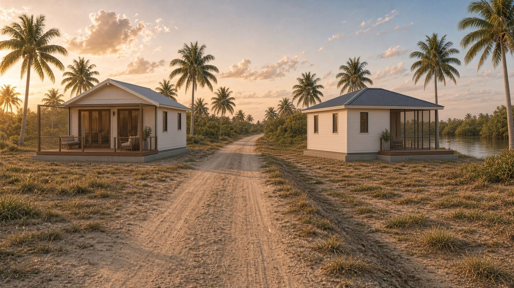
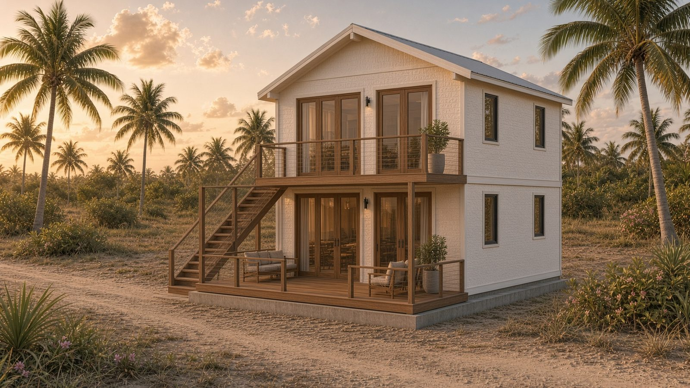
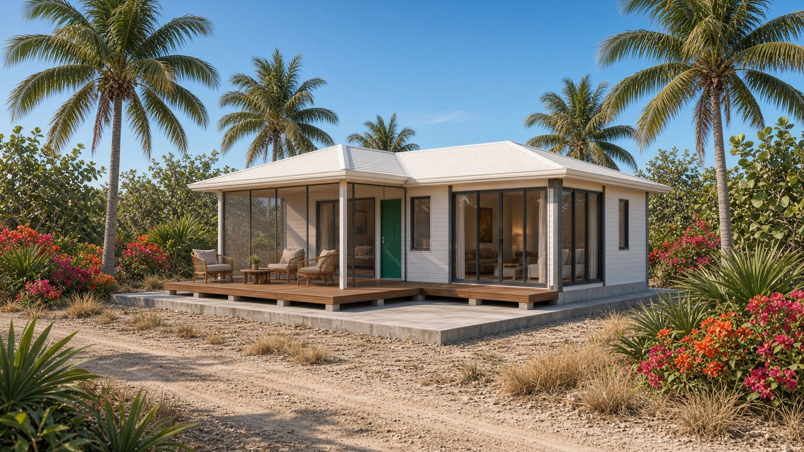
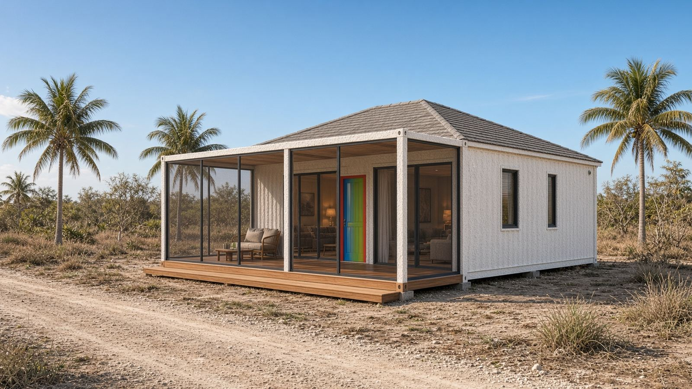

Screened deck
- Teak dining table 72″ CS-DT72
- Rattan dining chair ×6 CS-DC01
- Ceiling fan ×2 CS-CF01
- Linen daybed CS-DB01
- Outdoor lantern ×3 CS-LN3
Lot 127 · inland of the dirt road · looking at Lot 115
Featured two-story gable — 2 bed / 2 bath. A different house, not a copy of the canal lot. A pale dirt road sits between this lot and Lot 115. The 400 sf mosquito-screened teak porch faces that road and looks at the hip-roof neighbor. The canal is behind Lot 115 — hard to see from this porch.


Evening room
White posts, mesh, fans, teak dining. The view is the dirt road and the Lot 115 house — not the canal. Water is behind the neighbor and hard to see from this porch.

Three styles · this lot
Every style below is sited inland of the dirt road, looking at Lot 115. None of these sit on the canal. Same Caribbean Salt finish. Same 400 sf screened porch facing the road. Prices below are all-in furnished on this inland lot.



Caribbean Salt interiors
Same furniture family as the canal house. Two baths, plus $30,000 fully furnished.


Bill of quantities · this house
Bulk millwork and loose pieces, fitted before ship. Two-bath kit plus $30,000 fully furnished.
Working draft for presentation — not a contract. USD. Moonlight Bay de Consejo, 240-A Bayview Drive, Consejo, Belize.